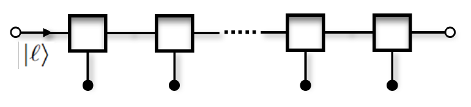

[26b] Towards transistor-based quantum computing
We propose a modular quantum computing architecture based on quantum transistors, called “telesistors.” Quantum gates are stored in symmetry-protected topological ground states and executed through measurement-induced gate teleportation, with edge modes serving as input and output ports. These transistors can be interconnected to build programmable quantum circuits. We show how symmetry protection of Clifford gates, together with magic-state injection for non-Clifford gates, supports universal quantum computation, and discuss additional coding schemes to enhance fault tolerance.